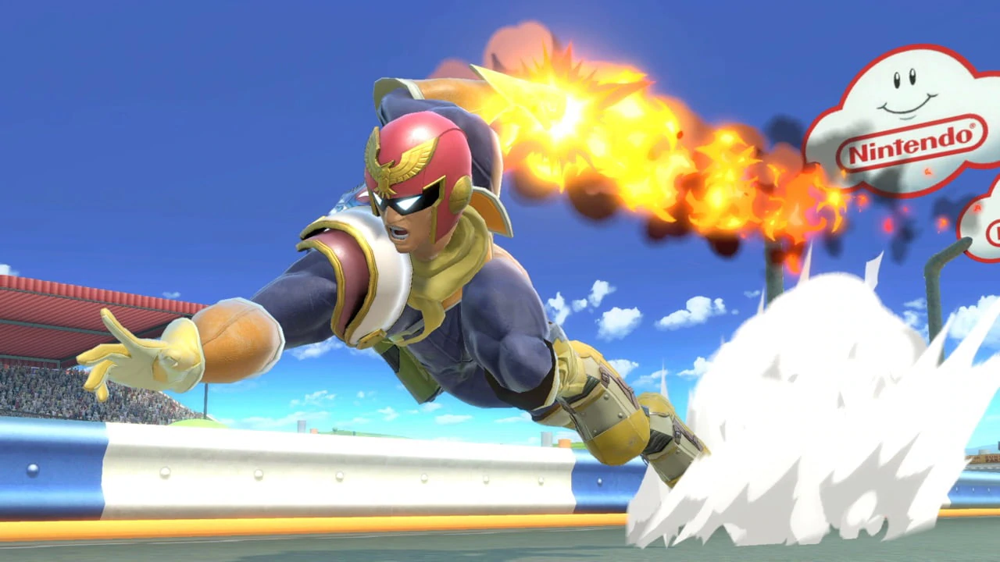
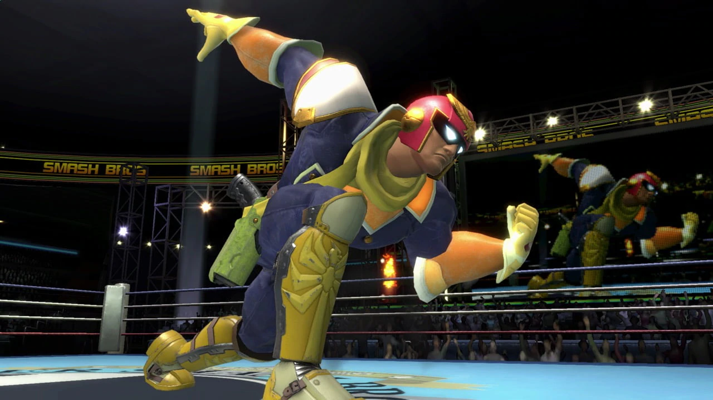
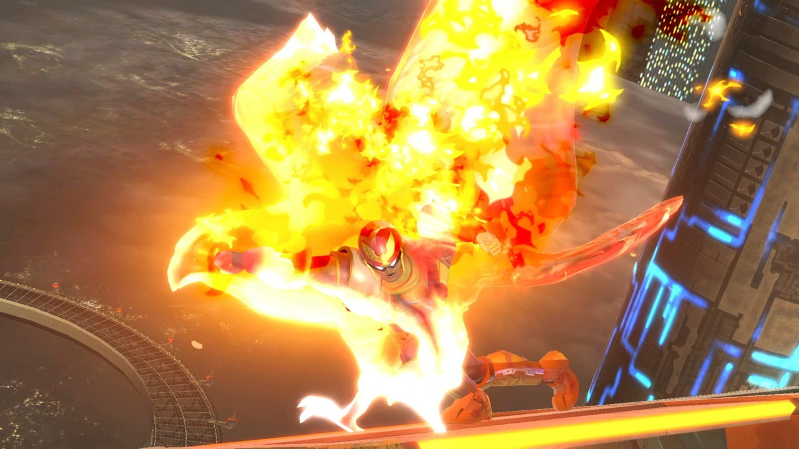
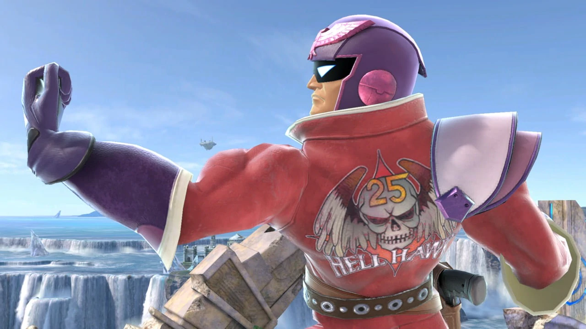
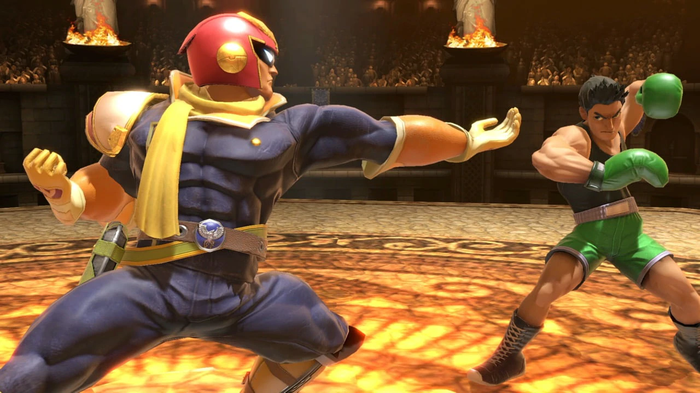

Mario


Arguably one of the most iconic video-game characters ever made, Mario is a well balanced fighter that accurately represents his series. Debuting in the classic "Super Mario Bros.", Mario has made a name for himself by stomping goombas, diving into warp pipes, collecting coins, and climbing flagpoles to save the Mushroom Kingdom's Monarch, Princess Peach, from the claws of the evil King Bowser, time and time again. In Smash, he is, like his games, easy to learn, but hard to master. For those who've mastered the character, he is a overwhelming character, whose arial combos will be able to carry you off-stage as soon as he gets a grab at around 40%. His neutral special is the fireball, originating from his first game, where he could grab a fire-flower and throw fireballs at anyone who stood in his way. In smash, it's as effective as in its origin, keeping fighters who like to get in close at a distance, racking up some quick damage as well. His side special is the Super-Cape, originating from "Super Mario World" on the SNES, where it could allow mario to fly. However, it works quite differently in Smash, where one swipe from the cape will turn around an enemy. You can use this to hit fighters coming back to the stage, turning them around and messing up their recovery. His up special is the Super-Jump-Punch, a reference to how mario can jump to break bricks with his head. In smash, this translates into Mario jumping diagonally upwards, helping mario recover. If it hits an opponet, coins will spew out of them, and they will be launched a considerable amount. This is what Mario uses to finish his combos, launching his opponets off the top. Finnally, his down special is the F.L.U.D.D, otherwise known as the Flash Liquidizer Ultra Dousing Device. It originates from "Super Mario Sunshine" on the Gamecube, where it is used for a variety of functions, from spraying water, to shooting Mario upwards. In Smash, he uses only one of those functions, that being spraying the water at enemies. It doesn't do damage, it instead pushes an enemy back. This can be used to push enemies in free-fall away from the stage securing you a K.O.
    